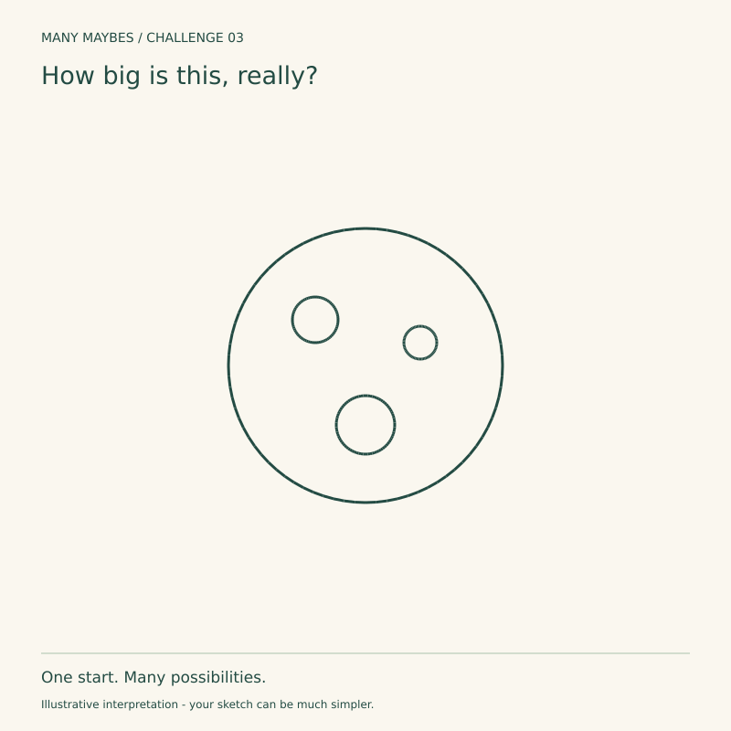
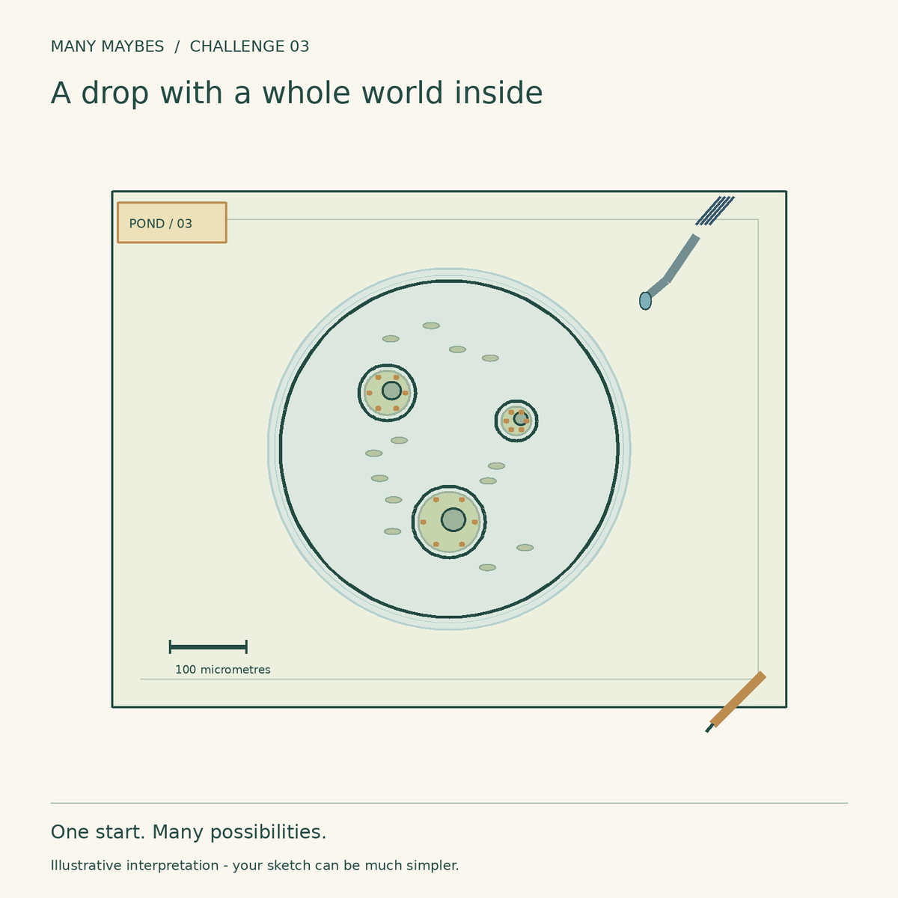
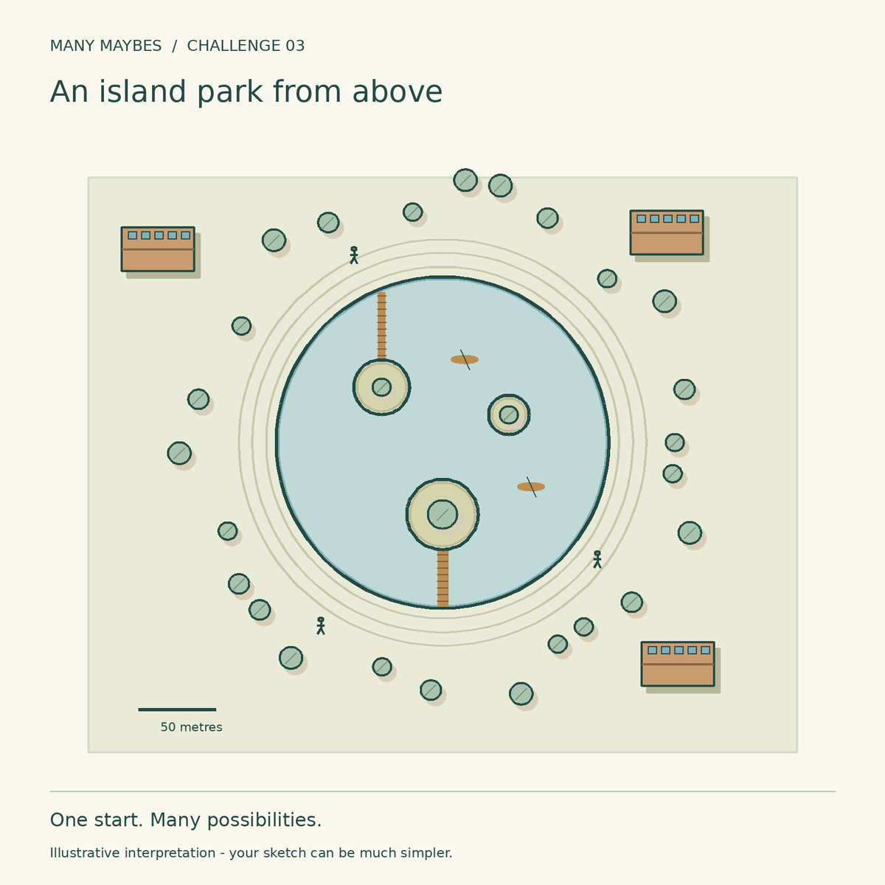
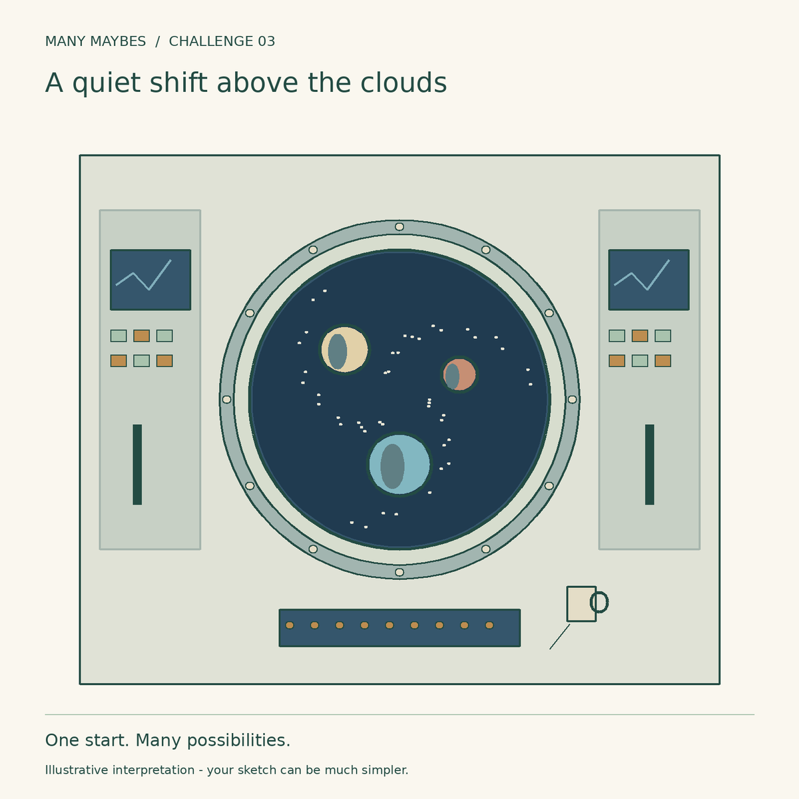

Challenge 03 · Change scale using evidence
How big is this, really?
Keep these four circles. What changes when you imagine the same marks at a different scale?

Your challenge
- Keep all four original circles visible and in the same relative positions.
- Add lines, colour, texture or collage; do not erase or cover a starter outline.
- Rotate or uniformly resize the whole starter only. No independent movement of circles.
- Imagine something smaller than a fingernail, something human-sized and something larger than a building. Develop one.
Beginner route: list three ideas, then add just three clues to one. Drawing skill is optional; words, simple sketches and collage count.


Printable worksheet is being prepared for this release.
Try before you peek?
Pause here if you want to discover your own interpretation first. The examples below are always available; they are possibilities, not answers.
Optional progressive hints
- Name your first assumption.
- Change scale using evidence. What evidence would make that reading plausible?
- Add one detail that changes the meaning of the whole image.
A drop with a whole world inside

Illustrative example
First assumption: The large circle is an everyday object.
Thinking shift: Shrink the observer
Convincing clues: A glass slide, translucent organisms, internal structures and a microscope scale bar suggest microscopic pond life. This is an illustration, not a biological identification.
Another direction: Try a cross-section of a fruit rather than pond water.
An island park from above

Illustrative example
First assumption: The small circles are details on an object.
Thinking shift: Turn marks into a mapped landscape
Convincing clues: Trees, footbridges, tiny people, buildings and boats establish a large circular lake with islands.
Another direction: Make a crater research station or a flood-control basin.
A quiet shift above the clouds

Illustrative example
First assumption: The outer circle contains the three smaller objects.
Thinking shift: Separate frame scale from subject distance
Convincing clues: Bolted framing, handrails, control panels and a tethered mug make the outer circle a human-sized window; distant worlds lie beyond it.
Another direction: Use a diving-bell window with fish at different distances.
Reflect
What detail told you how big the scene was? Remove it mentally: does the scale change?
Why this challenge?
After context in Challenge 01 and negative space in Challenge 02, test how surrounding evidence changes perceived size.
Share when ready
Keep your sketch and a sentence about what changed. Direct website uploads for this challenge are not enabled yet. You can share your own work on Instagram and tag @trymanymaybe. Tagging does not automatically add your work to the gallery.
Explore the challenge collection